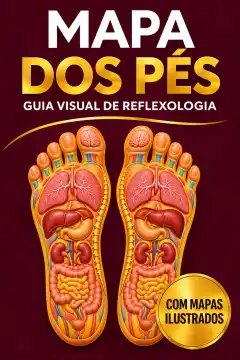
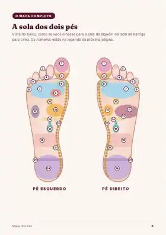
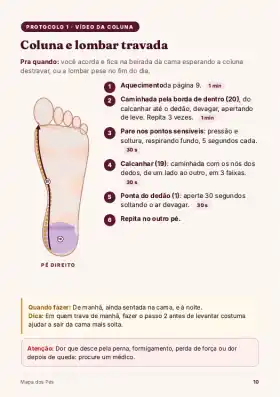
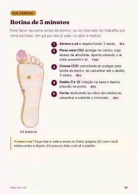

O Mapa dos Pés mostra, zona por zona, onde apertar na sola do pé e como fazer. São 8 protocolos passo a passo para 5 a 10 minutos no sofá, antes de dormir.
R$ 19,99 só até 30/11 · depois R$ 29,90

Imagem ilustrativa. Você recebe o livro digital (PDF) no celular.
Você senta na beirada da cama e a lombar não deixa levantar de uma vez. Primeiro uma perna, depois a outra, com a mão nas costas.
Olho aberto às 3 da manhã, cabeça a mil, lista de tarefas rodando. O despertador toca três horas depois e você já acorda cansada.
A dor começa na nuca, sobe para a cabeça, e ainda falta janta, louça e casa pra cuidar.
Você tira o sapato e a marca da tira fica desenhada no pé inchado. A perna pesa como se fosse de chumbo.
Esquenta na hora e alivia um pouco. Mas você passa, segue a mesma rotina, e a lombar volta a reclamar.
Ajuda a desacelerar, mas às 3 da manhã a cabeça continua a mil e você fica olhando pro teto.
É gostosa, mas é só água. Ninguém te mostrou o que fazer com as mãos depois que o pé sai dela.
O problema não é falta de esforço. É que ninguém te deu um método simples: saber onde apertar, como apertar e por quanto tempo, num ritual que cabe na sua noite.
Na reflexologia, a sola do pé é lida como um mapa do corpo. A zona da coluna fica na borda de dentro do pé, do dedão até o calcanhar. A da nuca fica na base do dedão. A do plexo solar, ligada ao sono e à tensão, fica no meio da sola.
O Mapa dos Pés pega esse mapa e transforma em páginas ilustradas: você vê a zona, vê o movimento da mão e faz. Sem decorar nada e sem precisar de experiência.
O objetivo é alívio, relaxamento e um momento de cuidado só seu no fim do dia. Não é tratamento e não substitui o médico.
Toque e veja onde fica cada zona:
Mapa clássico da reflexologia, visto pela sola.



Páginas reais do guia (24 no total)
R$ 19,99 só até 30/11 · depois R$ 29,90
Paga com Pix ou cartão, numa página segura. Leva menos de 2 minutos.
O PDF chega no seu WhatsApp e no seu e-mail logo depois do pagamento. Não tem frete nem espera.
Abre o guia no celular, escolhe o protocolo na tabela e segue a página. À noite, antes de dormir.
Assim que o pagamento é aprovado, chega uma mensagem do Mapa dos Pés com o PDF anexado. É só tocar e abrir. Uma cópia vai também para o seu e-mail.
Demonstração de como a entrega chega. Não é mensagem de cliente.
Arraste para o lado
Estudos mostram que a reflexologia ajuda no relaxamento e no alívio de dor em alguns grupos. Uma revisão sistemática de 2024 reuniu 26 estudos com 2.465 pacientes em tratamento de câncer e viu melhora de dor, cansaço e qualidade de vida em comparação com não fazer nada.
Mas a evidência ainda é limitada, e a reflexologia não substitui o médico nem tratamento nenhum. Use o guia como um momento de cuidado e relaxamento. Se a dor é forte, frequente ou diferente do normal, procure avaliação médica.
Fonte: revisão sistemática publicada na BMC Complementary Medicine and Therapies (2024). Ler o estudo
LIVRO DIGITAL (PDF) · NÃO É LIVRO FÍSICO
Abra o guia, faça os protocolos e veja se ele faz sentido para você. Se não gostar por qualquer motivo, peça o reembolso em até 7 dias após a compra e você recebe 100% do valor de volta.
É o direito de arrependimento do art. 49 do Código de Defesa do Consumidor. Sem letra miúda.
Não. O Mapa dos Pés é um livro digital, em PDF. Você recebe o arquivo no WhatsApp e no e-mail logo depois do pagamento e lê no celular, tablet ou computador. Nada é enviado pelo correio. Se quiser, pode imprimir em casa.
Assim que o pagamento é aprovado, o PDF chega no WhatsApp e no e-mail que você informar no checkout. No Pix, costuma ser na hora; no cartão, logo após a aprovação. Confira se o número e o e-mail estão certos ao preencher.
Fale com o seu médico antes. Isso vale também para quem tem problema de circulação, feridas ou inflamação nos pés, ou qualquer condição de saúde em acompanhamento. O guia tem uma página “quando não fazer” para você ler antes de começar.
Não. O guia foi feito para quem nunca fez. Você começa pelo mapa, aprende 4 movimentos básicos das mãos e segue o protocolo da página, passo a passo.
A rotina completa leva 10 minutos. Nos dias corridos, tem a rotina rápida de 3 minutos. Cada protocolo cabe em 5 a 10 minutos no sofá.
Não prometemos cura. A reflexologia é uma prática de relaxamento e cuidado, e os estudos mostram alívio em alguns grupos, com evidência ainda limitada. O guia não substitui avaliação médica. Dor forte, frequente ou diferente do normal pede consulta.
Você tem 7 dias de garantia. Peça o reembolso nesse prazo e recebe 100% do valor de volta.
No checkout aparecem alguns complementos opcionais, como o mapa para imprimir, reflexologia das mãos e acompanhamento de 7 dias no WhatsApp. Você não precisa de nenhum deles: o guia é completo sozinho.
Ou pode aceitar mais uma noite de lombar travada, olho aberto às 3h e perna pesada. A escolha é sua.
Quero o meu mapa por R$ 19,99R$ 19,99 só até 30/11 · depois R$ 29,90